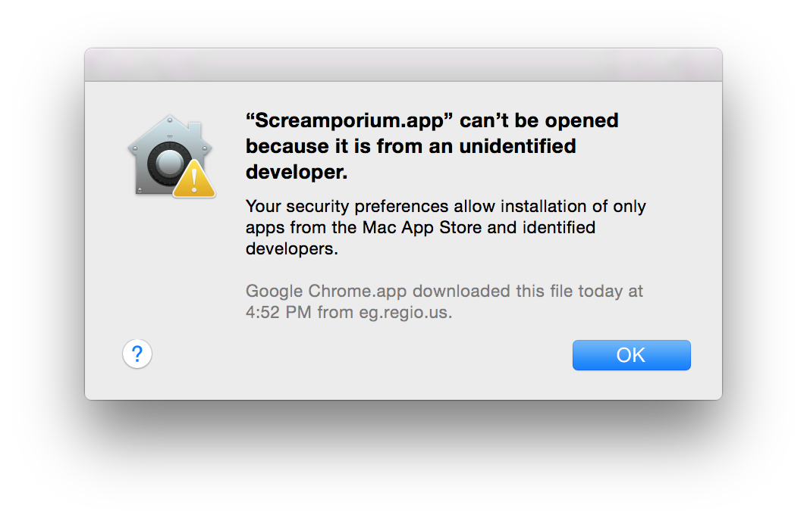
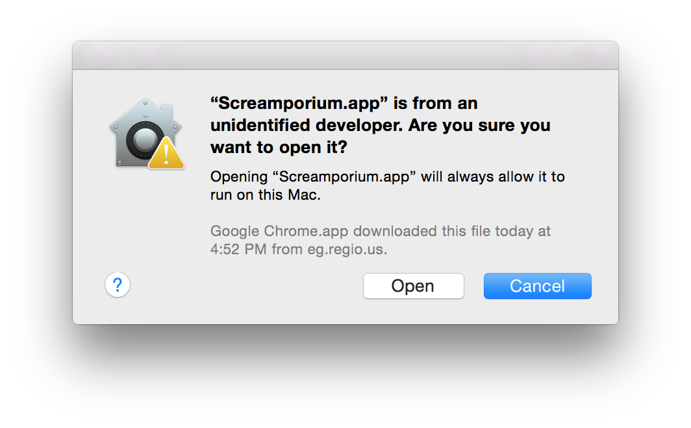

Finally! After years of service, Dr. Spookhand has trusted you with the daily operation of his Screamporium!
Ghouls are picky! If the Screamporium is LAME then they won't come back. Build scares to be COOL and get more business. Don't scare them too much, though!
Use the number keys to select items to build. Press 'r' to rotate. Press 'd' to delete. Click to place. 'Esc' for the menu.
Requires OpenGL 3.3 which is supported by Mavericks and Yosemite. Please let us know if it opens and closes right away.
Running:
Note, you might get a warning that this app is from an untrusted developer. If this happens, hold down control and right click on the file.

Choose "Open".

You will only have to do this once.
| Mac OSX version 1.0.2 | (Tested on OSX Yosemite) |
| Source code available on Github |
Please contact @pikkpoissgames if you have any issues with these builds! We want to make sure as many people get a chance to play as possible! If it doesn't work for you, let us know!
Please rate our submission! Available on this page
1.0.2
1.0.1 (before Jam deadline)